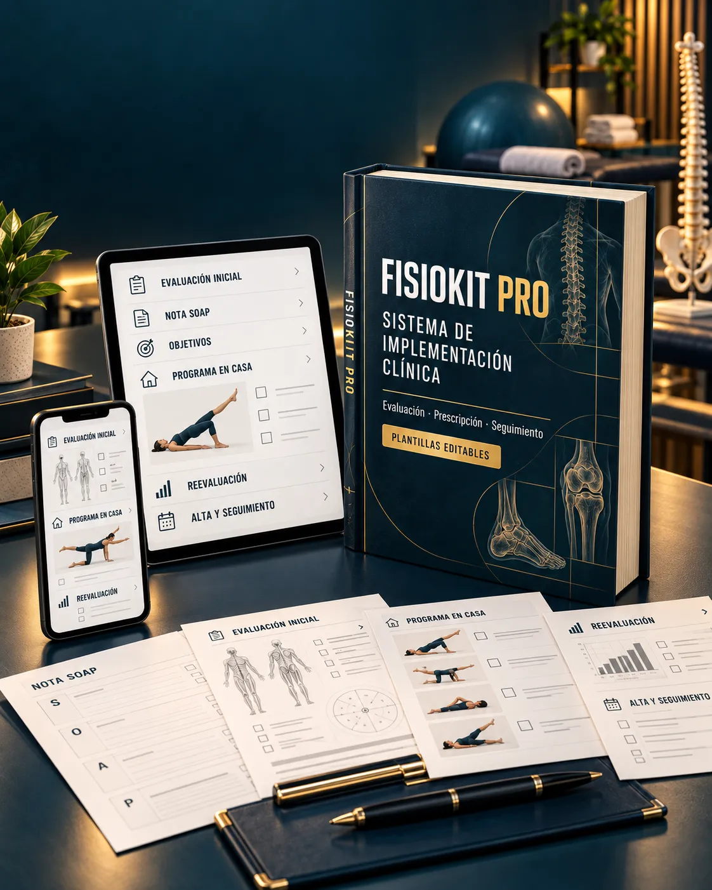

01
Empieza con una estructura que te diga qué registrar y cuándo hacerlo.
Empieza por lo esencial: una estructura práctica para organizar tus sesiones, registrar lo importante y entregar indicaciones más claras sin sumar otra carga a tu agenda.
El primer paso puede ser pequeño: dejar de depender de notas dispersas y comenzar con un flujo que puedas repetir desde tu próxima sesión.
Empieza con una estructura que te diga qué registrar y cuándo hacerlo.
Reduce el tiempo que pierdes creando documentos desde cero para cada paciente.
Entrega un plan más fácil de entender y de seguir en casa.

FisioKit Pro Esencial te da un punto de partida concreto para que la organización clínica no dependa de tu memoria ni de una carpeta llena de archivos.
Una ruta sencilla para ordenar tu flujo clínico y comenzar a utilizarlo desde la primera semana.
Evaluación, objetivos, nota de sesión y seguimiento en formatos listos para adaptar.
Una hoja clara para entregar indicaciones, dosis y recordatorios sin explicar lo mismo varias veces.
Un recorrido visual para saber qué preparar antes, durante y después de cada consulta.
Incluye los recursos fundamentales para comenzar. Si buscas el sistema completo con todos los módulos, plantillas y recursos de FisioKit Pro, podrás acceder a esa versión más adelante.
Una opción más accesible para organizar lo fundamental ahora y construir tu sistema clínico progresivamente.
Añade FisioKit Pro Esencial a tu acceso
Finaliza tu compra de forma segura a través de Hotmart.
No es una compra obligatoria para recibir tu producto inicial. Es una alternativa más ligera para empezar con lo esencial, sin compromiso de adquirir el sistema completo.
🔒 Pago procesado de forma segura por Hotmart · Entrega digital
No. Las fichas de ejercicios y este kit cumplen funciones distintas. Esta opción te ayuda a organizar la evaluación, las notas, los objetivos y la entrega al paciente.
Sí. Está pensado como una ruta de entrada, con menos piezas y una implementación más fácil de seguir.
Sí. Recibirás formatos editables para adaptar campos, datos de contacto y la forma de trabajo de tu consulta.
No pasa nada. Tu compra inicial continúa siendo válida; esta página solo presenta una opción adicional y más accesible.